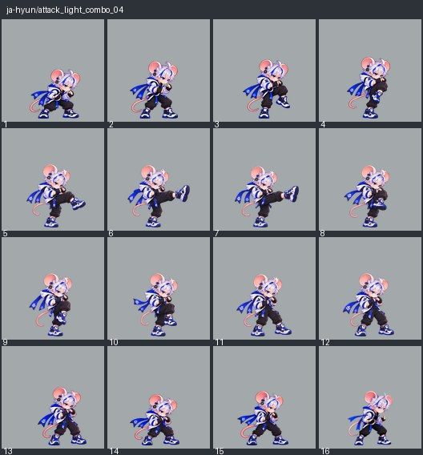
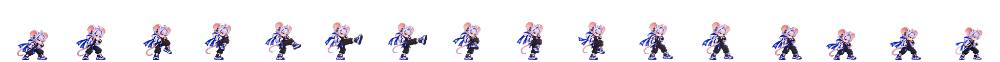
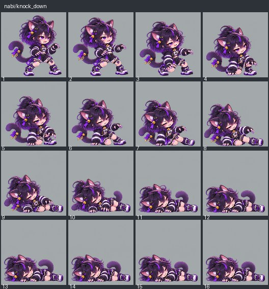
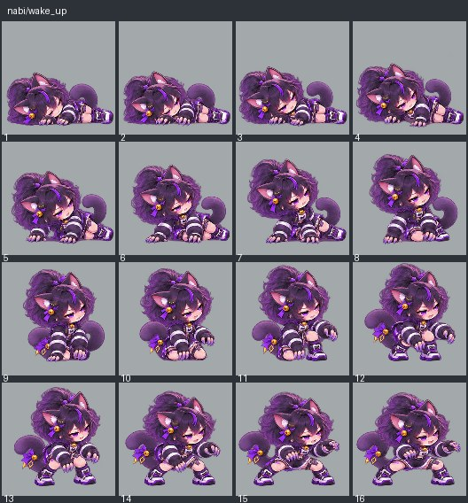

ja-hyun/attack_light_combo_04
왼손·오른손·왼손 뒤 마지막 킥. 머리·몸 크기는 중간타·대기와 일치한다.
전체 16프레임


현재 표현 코드를 실행한 60Hz 검토 기록입니다. 비반복 상태는2초 강제 유지, 반복 모션은완전한2주기, 점프는 단계별 속도를 지정한 시험이며 실제 경기의 상태 수명과 구분합니다. 차지는 유지·해제 변형을 따로 선택하세요. 페이지 표시 자체가 QA 통과는 아닙니다.
왼손·오른손·왼손 뒤 마지막 킥. 머리·몸 크기는 중간타·대기와 일치한다.


피격 뒤 중심을 낮추고 옆으로 넘어져 눕는다. 중간에 다시 서거나 떠서 앉지 않고 새 기상의 첫 누운 자세로 이어진다.

누운 자세에서 손 짚기→앉기→무릎→낮고 넓은 전투 대기 자세로 일어난다. 마지막에 높이 솟았다 내려앉지 않는다. 기상 보호12틱 안에 표현하고 입력 복구를 지연하지 않는다.
